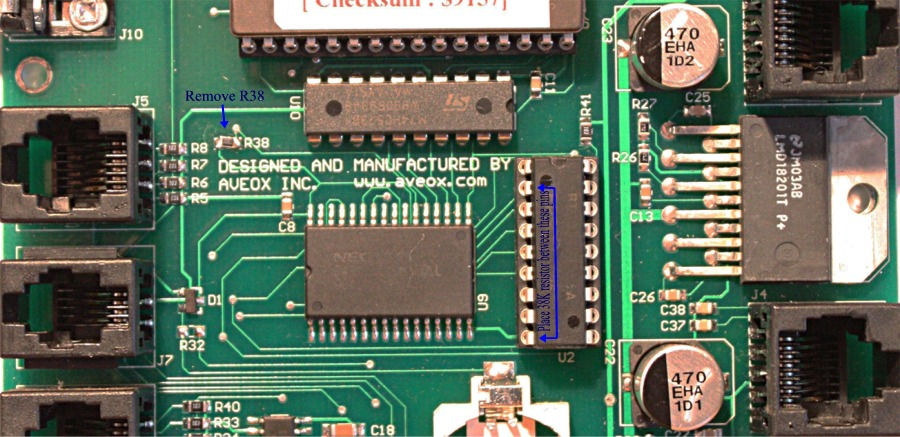

| Gemini 1 mods |
| Recommend modification to Gemini-1 boards from uses
Group message. This mod only applies to boards that use the RJ45 connectors for motor connectors. http://groups.yahoo.com/neo/groups/Gemini_Users/message/3584 Gemini's SRAM is not only used to store user catalogues and the observation logs, but also an amount of parameters and matrices used for the modelling algorithm. So it has a size of 128 kByte and is accessed (also for writing) very often, far exceeding size and reprogramming life time of an EEPROM. Normally, the Li CR2032 battery should last at least one year and should keep the SRAM content safe and the RTC running. If CMOS Resets occur after some minutes even with a fresh battery or battery lifetime is significantly shorter than one year, I recommend the following patch for the electronically inclined:
I've tested this modification with three different boards, one of them had CMOS Resets. All work fine. René |
|
 Click on image to see larger view. Picture courtsey of Brendan |
{kind=link}